自监督学习#
在监督学习中，我们用成对的训练资料进行训练（比如中译英任务中中文文章与其对应的英文翻译），而在无监督学习当中，是没有成对的训练资料的（比如不带英文翻译的中文文章）。
自监督学习是无监督学习的一种，他将训练资料x的分为x’和x’‘，用x’进行训练，然后用x’'进行验证。
自监督学习现在被广泛用于大模型的预训练，比如BERT和GPT。
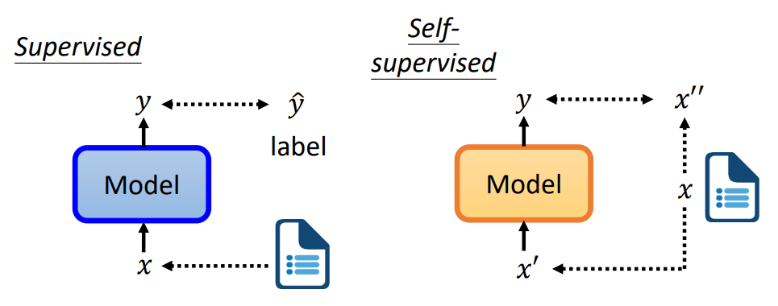BERT#
什么是BERT#
BERT是芝麻街里的人物一个巨大的预训练语言表征模型，它的全称是Bidirectional Encoder Representations from Transformers。它强调了不再像以往（Transformer）一样采用传统的单向（每一个token的注意力只能在之前的token上）语言模型或者把两个单向语言模型进行浅层拼接的方法进行预训练，BERT自监督训练时每一个token的注意力可以放到全局。
BERT在预训练后，只需要接上一个额外的输出层，给予一点带标注的资料微调，就可以在翻译、问答等下游语言任务中有优秀的表现。
从BERT开始，一大批巨大模型开始出现，如GPT、T5等。
BERT的训练方法#
Masking Input#
用一句话概括Masking Input就是让BERT学会做“填空题”，这里的填空题是指在把输入的一些token换成特定的token或者随机的token，从而使完整的句子中出现空位，BERT需要学会预测这些被替换的token是什么，训练时目标是最小化输出token和正确token的交叉熵。
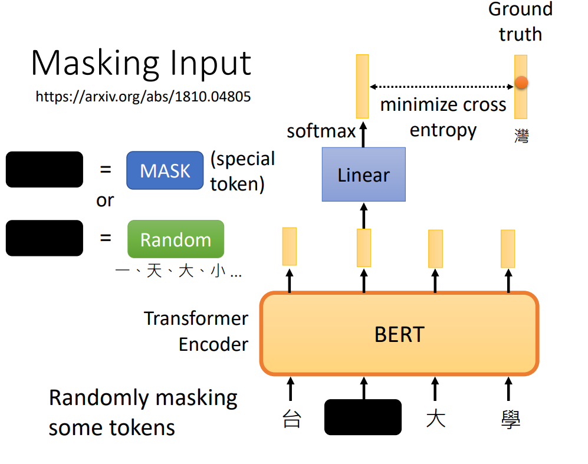Next Sentence Prediction#
这个方法是输入两个句子，判断sentence 1与sentence 2在一篇文章中的前后关系。
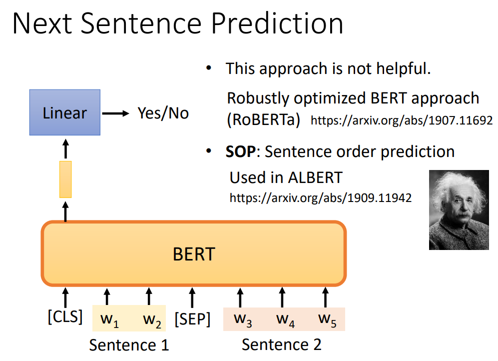怎么使用BERT#
经过预训练后的BERT学会了做“填空题”、“排序题”，此时的BERT像干细胞，没有具体的功能，但有分化为执行具体任务的能力。
要让BERT能做具体的任务，我们需要在BERT后加入一个输出层（BERT其实和Transformer的Encoder类似，所以后面需要输出层），然后再给予一点具体任务的成对资料进行训练（这个过程称为Fine-tune，即微调），就可以让BERT做具体的任务。微调前，输出层的参数是随机的，而BERT的参数是经过预训练的。
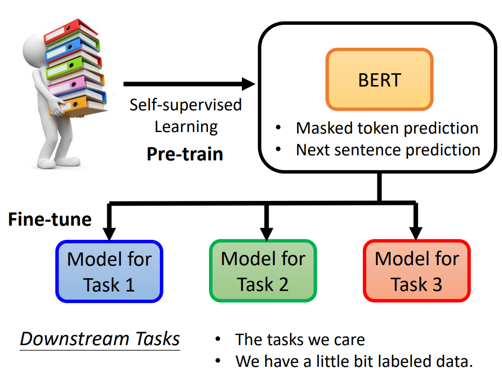下面举四个例子具体说明如何使用BERT
文章情感判断#
预训练的BERT接受句子和CLS token作为输入，在预训练的BERT后接一个参数随机初始化的线性输出层，线性输出层将BERT输出的其中一个向量作为输入，然后用（文章，情感）这样成对的资料微调模型，就可以得到良好的效果。
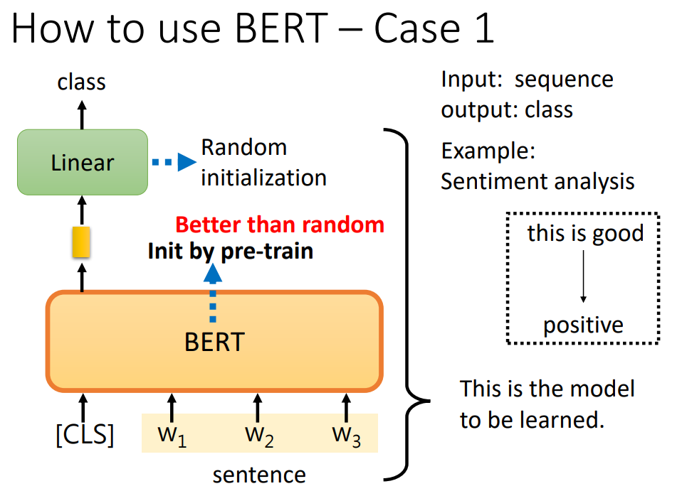句子词性标记#
和刚刚不同的是，此时需要输出的长度和文章长度是一致的，需要把句子中每个词在BERT中的输出都接入输出层，同样给予一点成对资料训练即可。
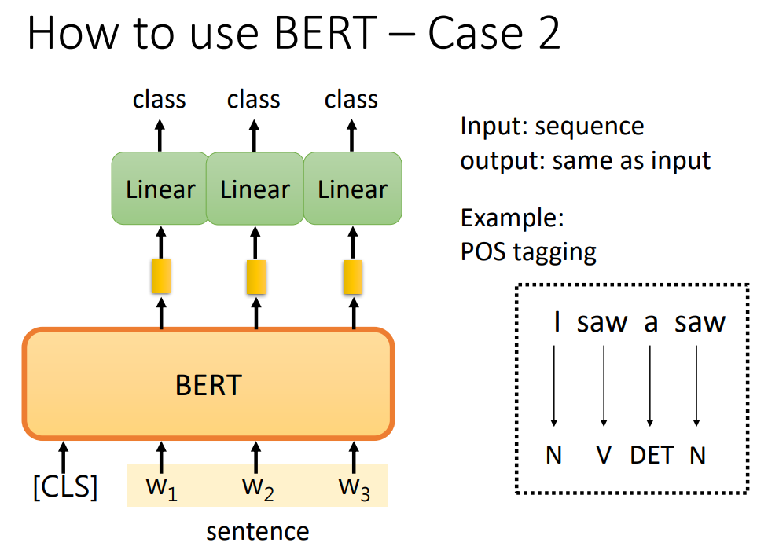逻辑判断#
逻辑判断是指输入两个句子，判断两个句子是否有逻辑关系。此时只需要在两个句子之间加入一个SEP token即可。
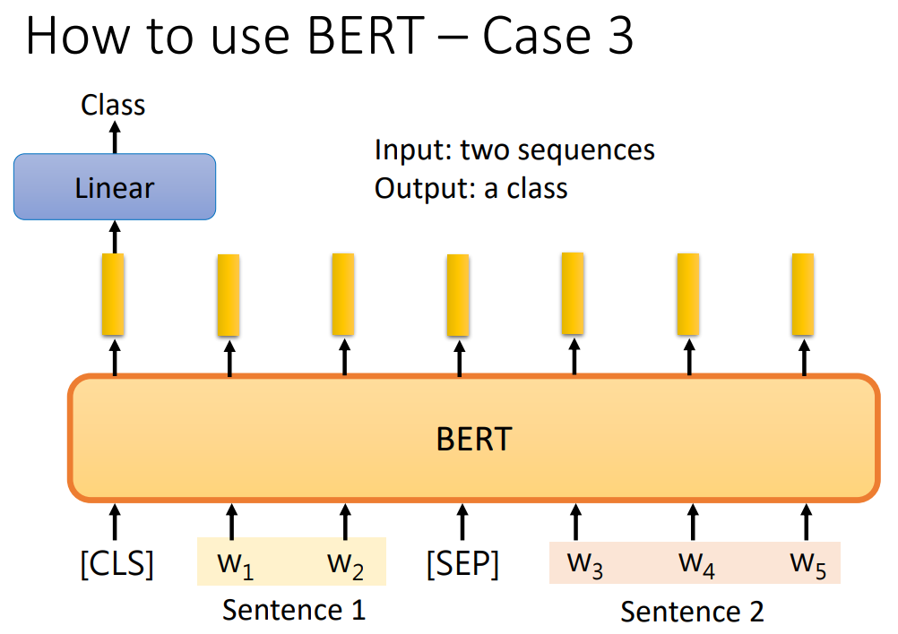摘录型问答#
摘录型问答是指让模型从文章中摘录一部分作为答案（这种问题保证答案在文中可以摘录），输出层需要输出两个token，代表答案在文章中的始末位置。
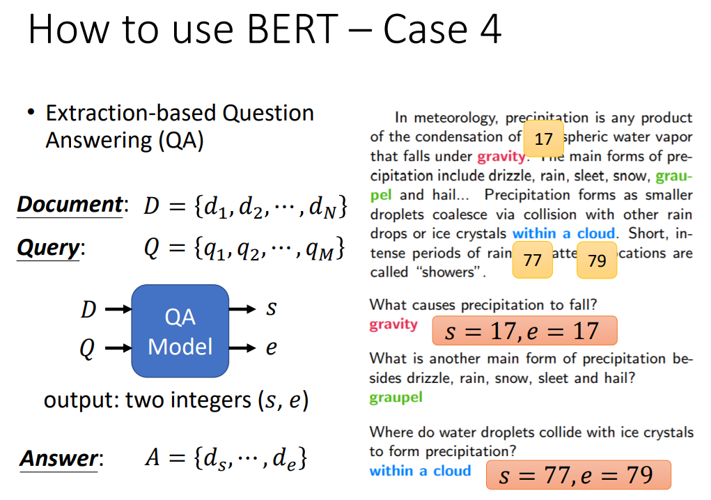BERT接受输入的方式和逻辑判断中相似，只是两个句子换成了问题+文章，此时需要两个向量（长度和BERT输出的向量是相同的，参数是随机的），向量和文章经过BERT后产生的各个向量作内积，产生每个位置作为答案开始或结束时的概率，然后分别选择概率最高的位置作为答案的开始/结束。
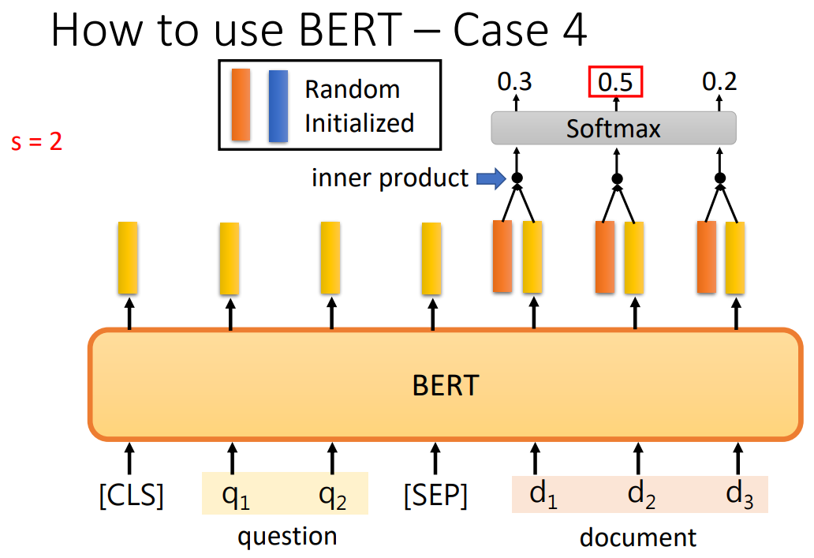 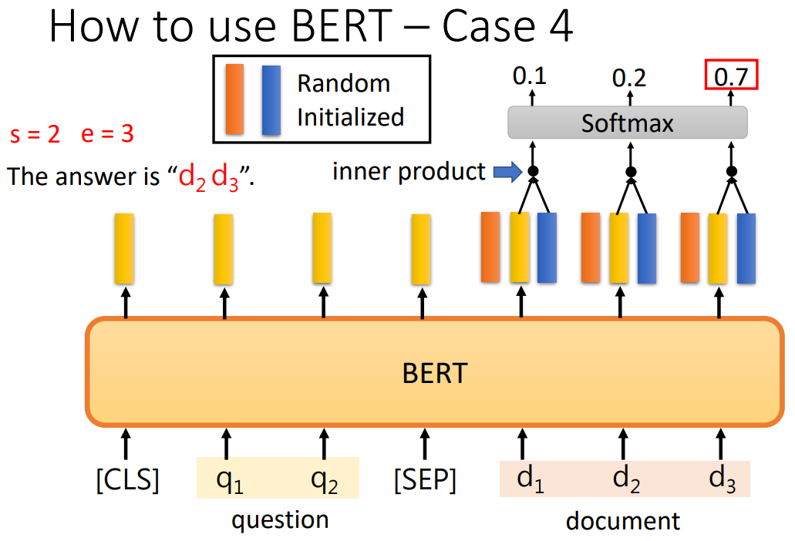BERT的评估#
BERT常用GLUE评估，GLUE里面有九项语言相关任务，通过BERT在九项任务上的性能综合评估BERT。
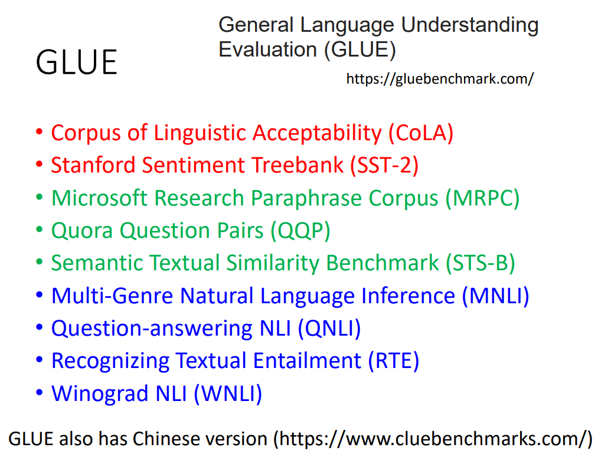https://arxiv.org/abs/1905.00537中总结：随着时间推进，BERT的表现越来越好，甚至在多项任务上都能超过人的表现（水平直线）。
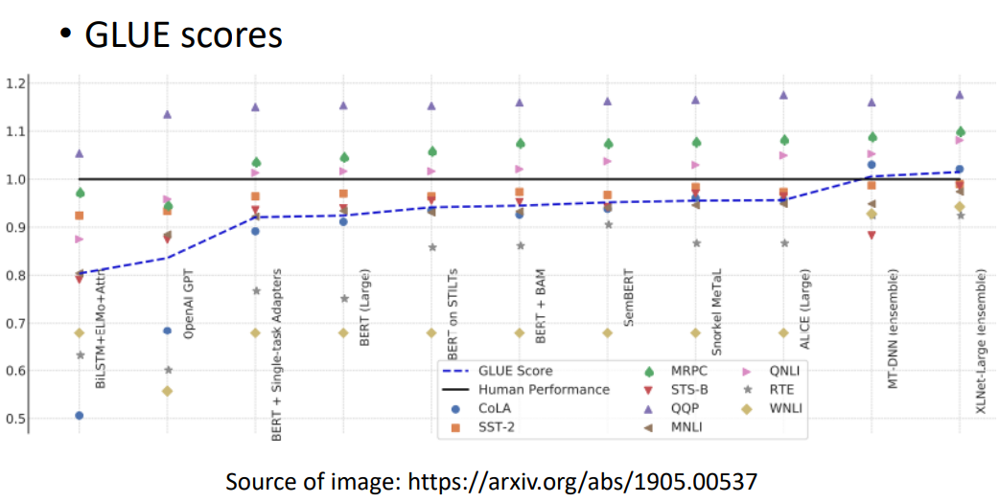为什么BERT有效#
解释与佐证#
最常见的一种解释是BERT通过做“填空题”或其他预训练任务，真的“学会了”语言，能根据上下文将文字映射到语义空间上，相近意思的词在语义空间上的映射会比较接近。比如同样是“苹”这个字，吃苹果中的“苹”和“果”、“草”的映射比较接近，苹果手机中的“苹”可能和“电”的映射比较接近。所以在BERT对每个字做了有效的映射后，输出层可以很容易地输出正确结果。
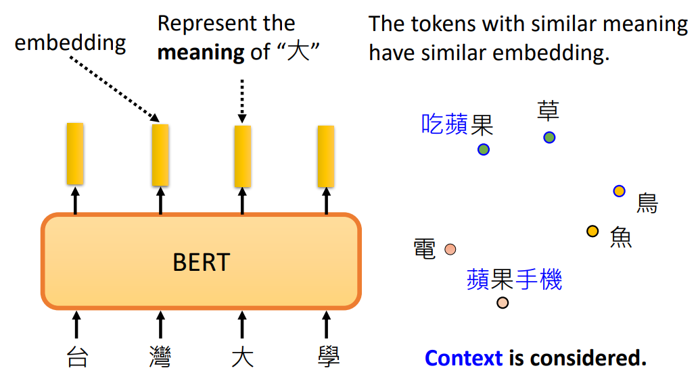取BERT对不同语境下的“苹”的映射，求各个映射之间Cosine Similarity，发现相近语义的“苹”字之间Cosine Similarity比较高，不用语义的“苹”字之间Cosine Similarity比较低。这个实验在一定程度上能说明BERT为什么有效。
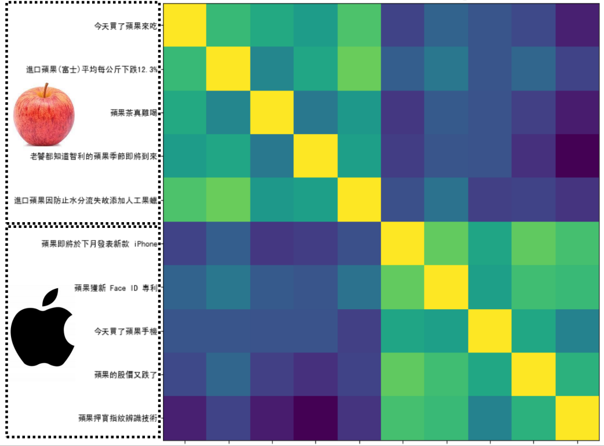对之前解释的质疑#
https://arxiv.org/abs/2103.07162中指出，用语言资料训练的BERT用在蛋白质、基因、音乐领域的任务也会有比不用预训练的方法表现更好，所以BERT有效的原因真的是因为BERT“学会了”语言吗？BERT有效的原因目前还在探索中。
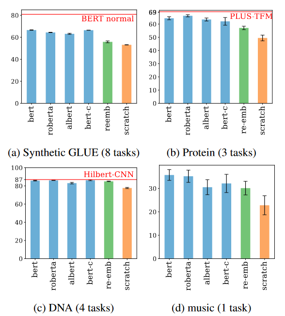Multi-lingual BERT#
之前提到的BERT都是单一语言的BERT，但是实际上，预训练BERT的时候可以用多语言的资料进行训练。比如下图指的就是让BERT做不同语言的“填空题”。
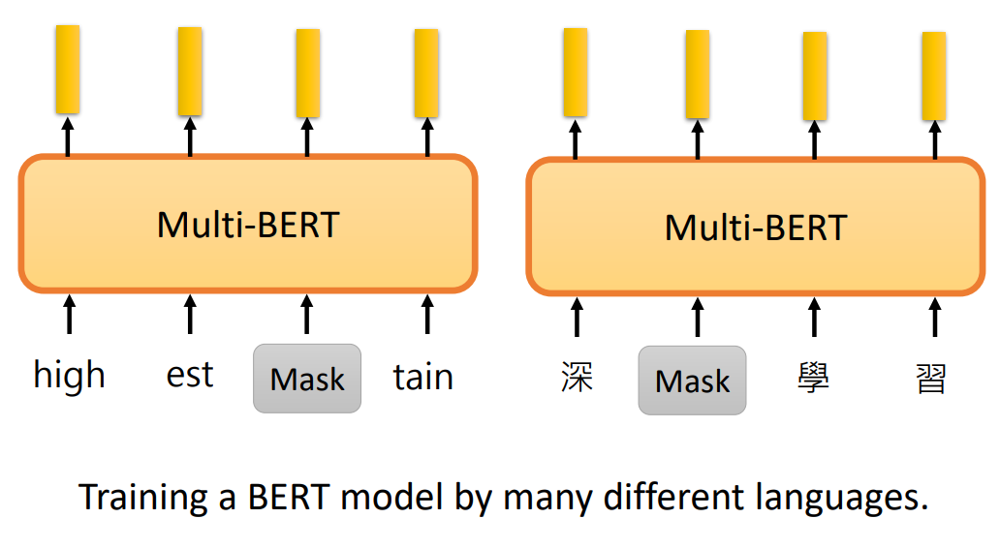https://arxiv.org/abs/1909.09587中提出在zero-shot（提问时没有给出任何参考案例）阅读理解任务中，多Multilingual-BERT在只经过英文问答题的微调后，做中文的阅读题时竟然还能有不低的正确率。
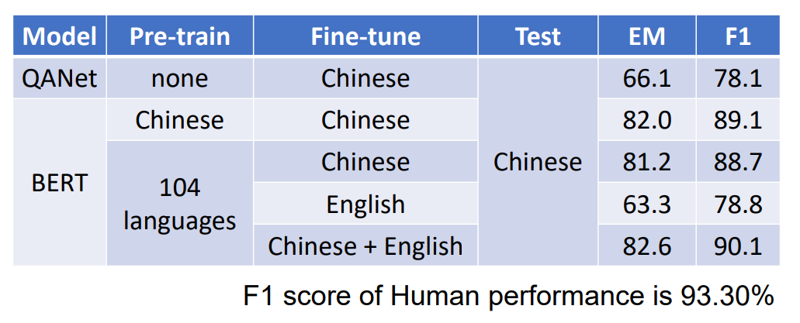一种解释是对于Multilingual-BERT，其实不同的语言的相同语义的词在语义空间上的映射是很接近的，但是训练这样的Multilingual-BERT是需要大量的资料与运算资源，才能让BERT学到不同语言之间的联系。
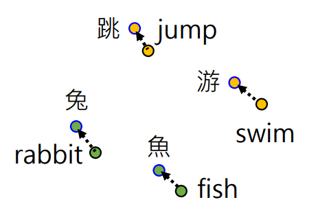但是，如果语言之间真的没有差距，那么比如做英文问答时不会冒出别的语言吗？而这实际上是不会的，因为其实不同语言之间还是有一定的距离的。所以李宏毅课题组进行了一项实验（https://arxiv.org/abs/2010.10041），把中文词汇映射的平均值减去英文词汇映射的平均值，得到两种语言之间的差距。然后让Multilingual-BERT读入英文句子，加上英文到中文之间的差距，竟然能输出中文的句子了，而且部分中英词汇在语义上是相同的。所以一定程度上说明了Multilingual-BERT中蕴藏了语言之间的联系。
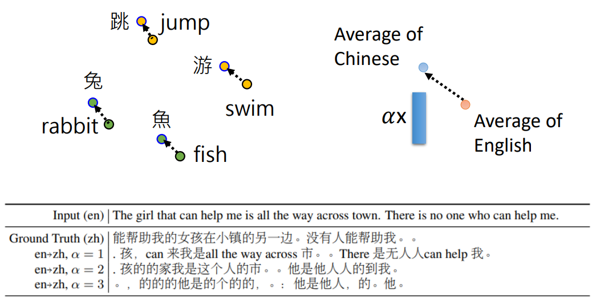GPT#
GPT的训练和使用其实和BERT是很类似的。
GPT的训练#
与BERT相似的是，GPT同样使用自监督学习进行预训练，但是预训练的任务是预测句子中的下一个token。
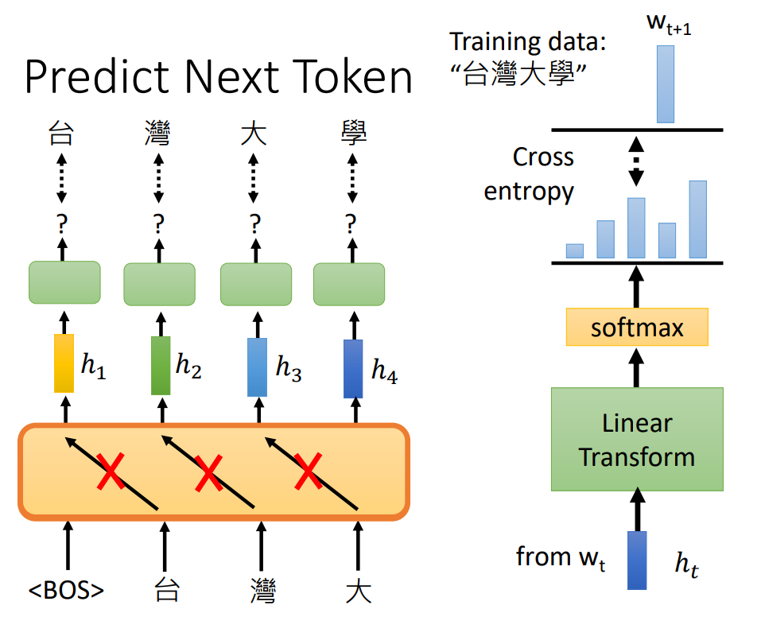GPT的使用#
和BERT相似的是，GPT在迁移到下游任务时也需要一点成对的训练资料，但是和BERT不同的是，GPT的模型比BERT大得多，以至于连微调GPT都是很困难的，所以GPT在微调是不对GPT的参数进行调节的，并采用few-shot learning（提供问题和多个范例，让GPT给出答案）、one-shot learning（提供问题和一个范例，让GPT给出答案）甚至zero-shot learning（只提供问题，直接要求GPT给出答案）的方法进行训练。

自监督学习在语音和图像领域上的应用#
概述#
自监督学习不仅可以用在文字上，也可以用在语音和图像领域上。语音/图片版本的BERT都可以通过大量未标注的资料来进行预训练。
语音领域上，李宏毅课题组提出了SUPERB（https://arxiv.org/abs/2105.01051、https://arxiv.org/abs/2203.06849），里面有十四项语音任务，用来评估语音版的BERT的表现。
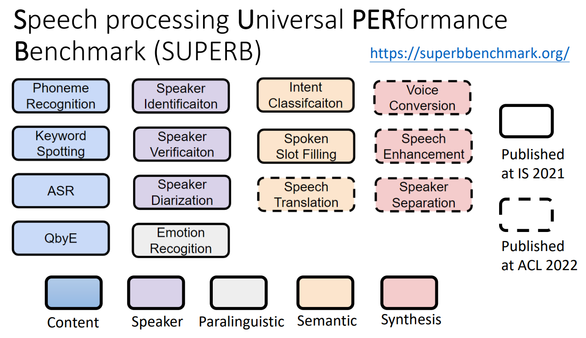视觉领域上，https://arxiv.org/abs/2110.09327内总结了各种模型在如物体检测、语义分割等多项视觉任务上的表现。
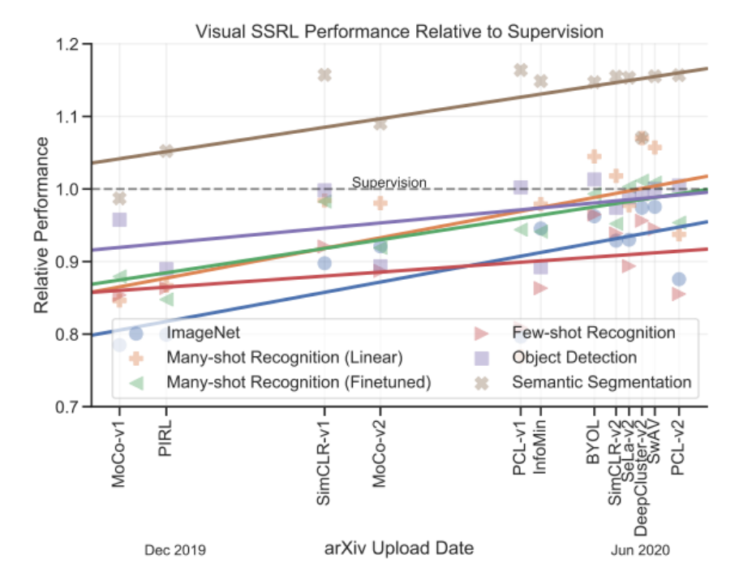下面介绍五种训练语音/视觉领域的BERT的方法。
Generative Approaches#
文字版的BERT和GPT训练的中，我们会让BERT和GPT去生成一些字符（也许在是在文章中被遮挡，也许是预测接下来的字符）。所以就希望能把这个有效的方法迁移到语音和视觉领域。
语音#
但是语音和文字不同的是，masking时需要遮挡多个向量（https://arxiv.org/abs/1910.12638），因为语音中各个向量和其相邻的向量是差不多的，所以如果只遮挡一个向量，模型可能只是学会了对被遮挡向量的周围两个向量做一个内插罢了。
TERA则采用另一种遮挡方法，它并非遮挡某些向量，而是遮挡各个向量的部分维度，让模型去补全被遮挡的维度，这种方法可以让模型学到更多语音的知识。
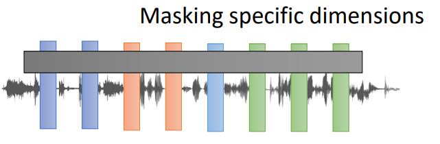如果想用GPT训练的方法，让模型预测接下来的语音信号也是可以的，只不过和文字不一样的是，需要预测n个向量（一般而言n>3），理由和masking时遮挡多个向量理由是相似的。
视觉#
对于图像，只需要把图像拉成像素向量的序列就行了，接下来直接套用BERT和GPT的方法就行了。
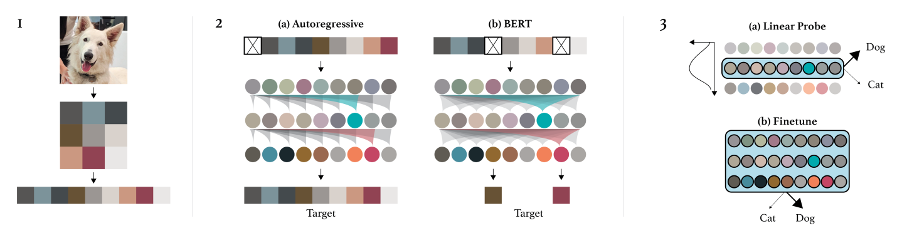但是这个方法的问题在于语音和图像包含了比文字更多的信息，所以用生成的方法让模型学习还原/产生语音或图像是比较困难的。
Predictive Approaches#
前面说到，让模型学习还原/生成完整的语音/图像是困难的，所以就希望用简单而又足够让模型学习到语音/图像特性的任务预训练模型。
https://arxiv.org/abs/1803.07728中提出，可以让通过模型学习判断一张图片被旋转的角度来预训练模型，除了这个方法以外，当然也可以用其他的简单任务来预训练模型。
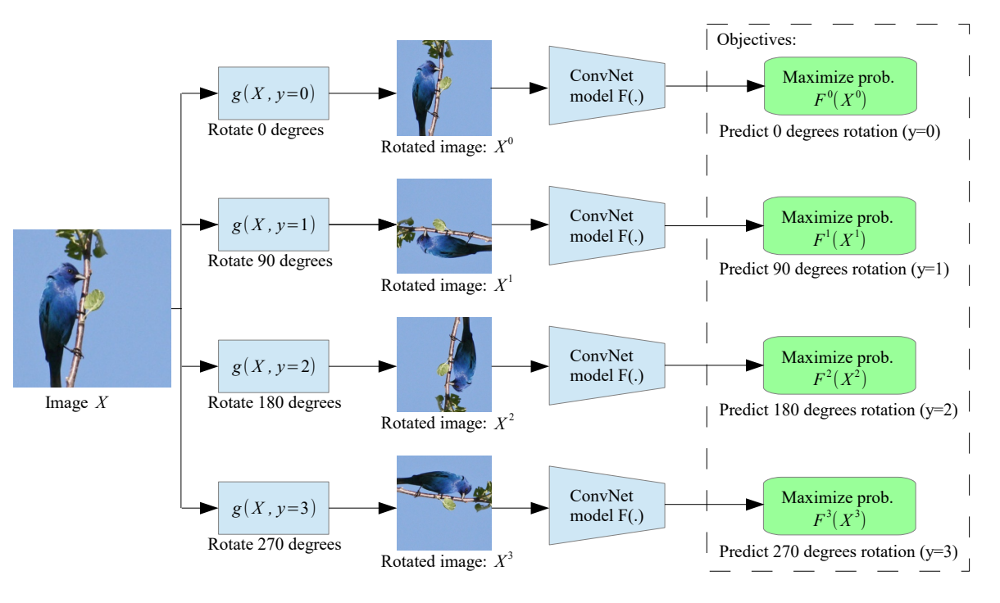语音上，也可以用相似的方法，比如让训练模型判断两端语音之间间隔的时间（https://ieeexplore.ieee.org/document/9060816）。

但是设置简单任务训练模型需要对语音/图像领域的信息有比较深入的理解，所以有没有一些更通用的方法呢？
HuBERT中采用对k-means的方法对语音中的向量进行聚类，然后采用训练模型去预测被遮挡的向量的类别，在图像领域上Deep Clustering for Unsupervised Learning of Visual Features一文中也提出了类似的方法。
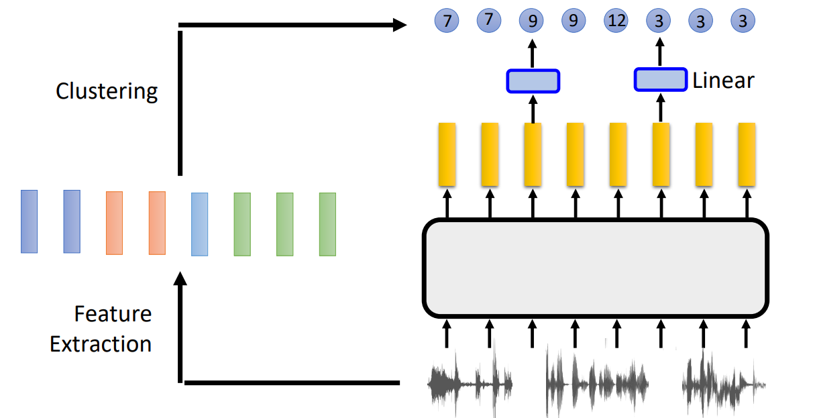Contrastive Learning#
前面的两类方法都需要让模型学习去产生一些东西，但是能不能让模型在不产生任何东西的情况下学到语音/图像的特征呢？
SimCLR#
SimCLR中指出，可以通过把一张图像经过增强，得到不同的图像，训练模型使相似的图像（认为两张相似图像是“positive examples”）输出的向量是尽可能相近的，而训练模型使得不同的图像（认为两张不相似图像是“negative examples”）输出的向量是尽可能相差比较大的。对于语音领域，也有对应的Speech SimCLR。
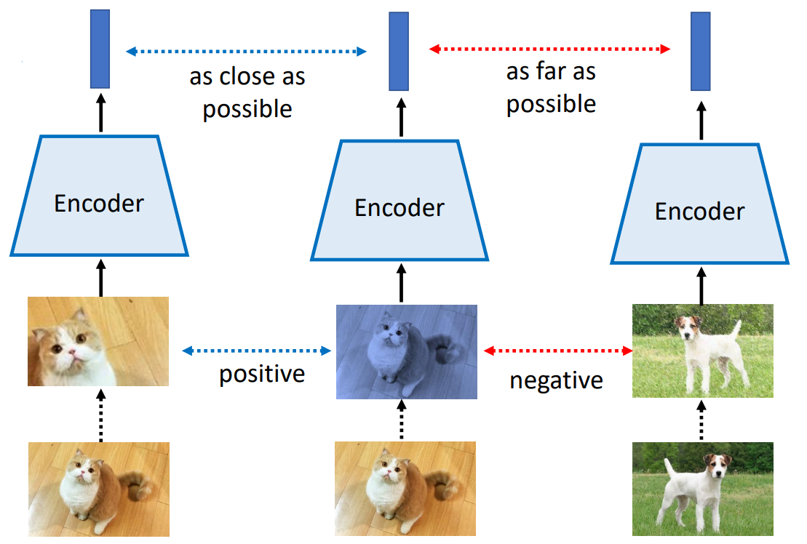但是对于Contrastive Learning而言，难的是判定什么是negative examples，两个为negative examples的样本不能差异太大（比如两张图像连背景颜色都不同，那么可能模型只学会了判断背景颜色），也不能差异太小（比如两张图片都是猫），所以需要复杂的方法选出negative examples。
那有没有什么方法能避开选择negative examples呢？下面两种方法可以做到
Bootstrapping Approaches#
如果为了避开negative examples，直接只用positive examples来训练模型，希望模型输出的向量尽可能相近，那么可能会发生“collapse”，就是模型对于任何图片都输出同样的向量。
Bootstrapping则采用一种很巧妙的方法，它让两张图片经过的路径不对称，其中一张图片只经过Encoder（暂且称为左路径），另一张图片经过Encoder后要再经过一个只有几个layer构成的简单predictor（暂且称为右路径），然后只通过右路劲更新参数，再把右路径中的Encoder中参数复制给左路径中Encoder。最后希望左右路径产生的向量是尽可能接近的，这种方法可以避开negative examples，还能避免出现“collapse”。
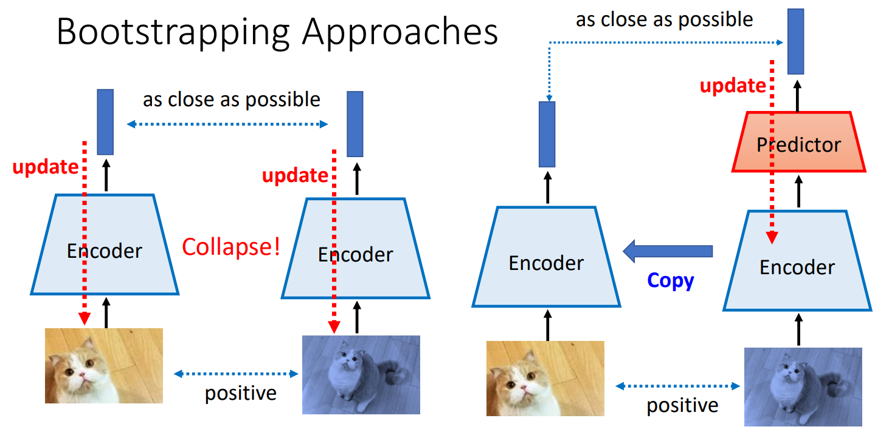Simply Extra Regularization#
VICReg#
这部分没太听懂quq，还希望dl教我……
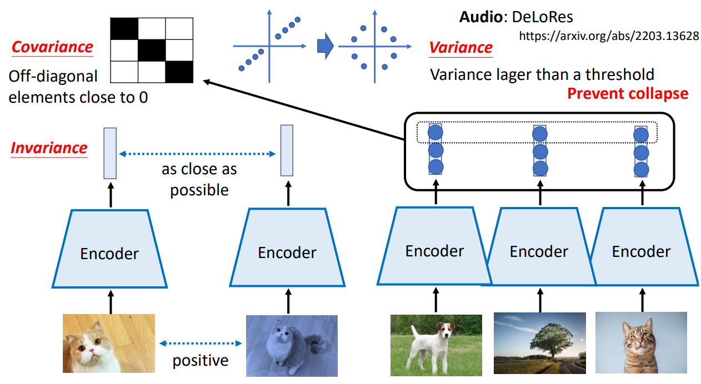作者: 核子